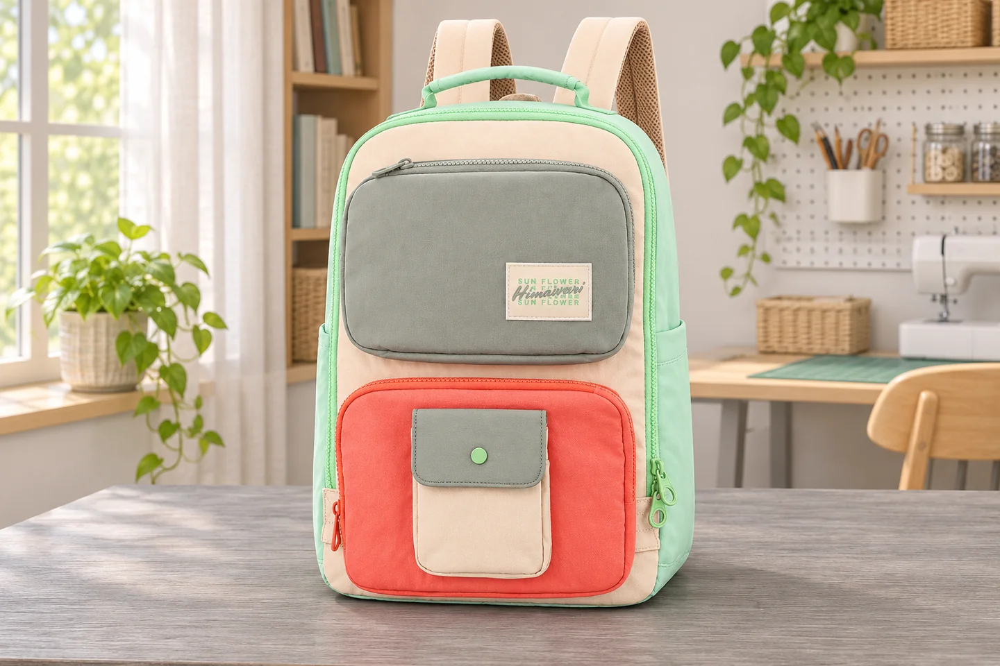
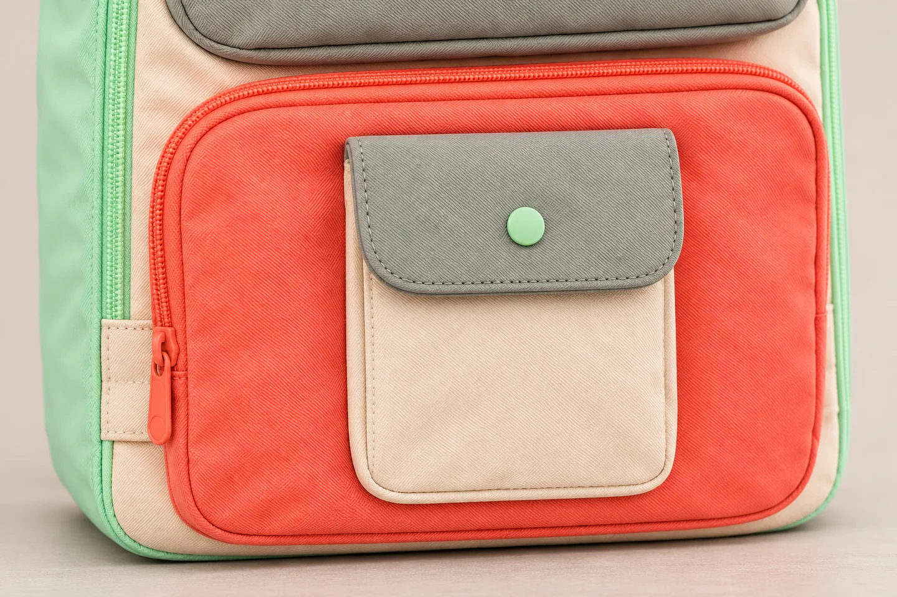
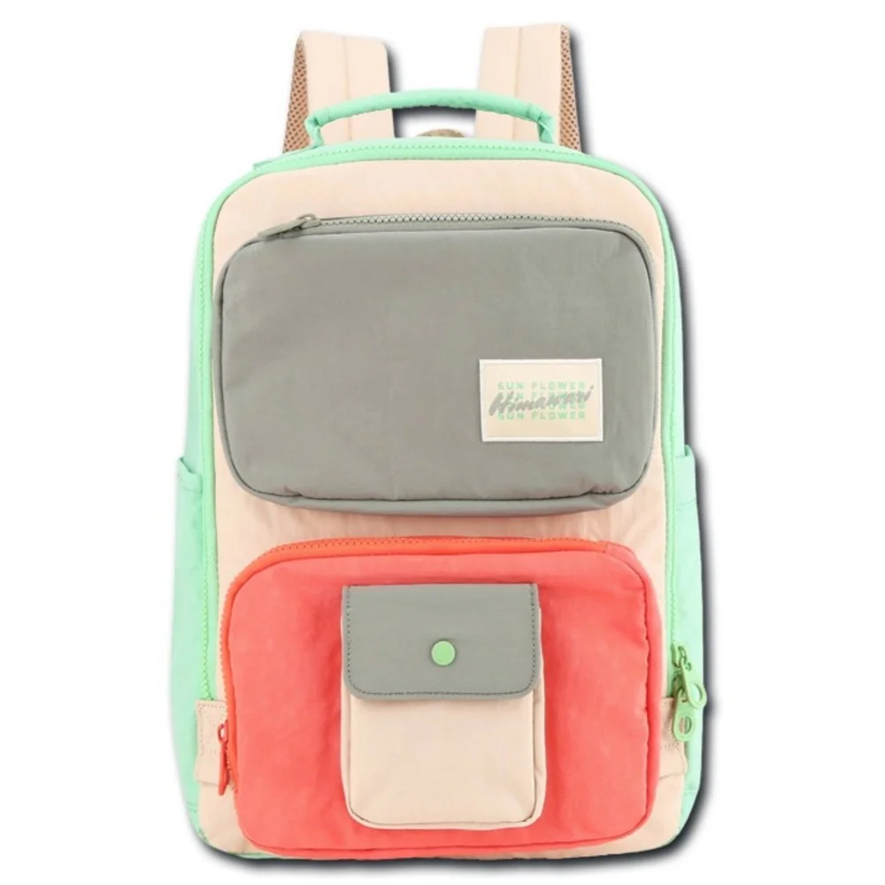

백팩 작은 포켓의 덮개가 닫히지 않을 때 어느 쪽을 받칠까

백팩 앞의 작은 포켓을 닫으려고 둥근 부품을 눌렀는데 덮개가 비스듬히 밀립니다. 손을 떼면 끝이 다시 올라옵니다. 한 손으로 더 세게 누르면 가방 전체가 구부러지기도 합니다. No.8029 민트아이보리의 실제 사진에는 코랄색 앞포켓 위에 아이보리색 작은 포켓과 회색 덮개가 보입니다. 덮개 가운데에는 민트색 원형 부품이 달려 있습니다. 사진은 겉면을 보여주므로 덮개 아래의 부품이 어떤 구조인지, 어느 정도 힘으로 닫혀야 하는지는 실물을 보고 확인합니다.
덮개 가운데를 한 손으로 세게 눌러도 될까요?
몸판 전체를 걸어 놓거나 무릎에 두고 누르면 손이 향하는 쪽으로 몸판도 같이 움직일 수 있습니다. 덮개와 맞닿는 아래쪽이 뒤로 밀리는 상태에서는 가운데에 힘만 더 줘도 두 부분이 같은 자리에 놓이지 않습니다. 평평한 곳에 가방을 받친 뒤 덮개 끝과 작은 포켓 입구가 서로 어긋나는지부터 보세요. 덮개를 눌렀을 때 포켓이 꺼지는지, 천이 한쪽만 두 겹으로 접혔는지를 살피면 손이 어디로 가야 할지 알 수 있습니다.
실물에서 두 면이 눌러 맞물리는 방식으로 확인된다면 한 손으로 작은 포켓을 덮개 바로 아래에서 가볍게 받칩니다. 그 주변의 천을 움직이지 않게 놓아 두고 다른 손으로 덮개를 맞춥니다. 손끝을 넣기 어렵다면 앞포켓에 손을 억지로 넣어 밀지 말고 책상 위에서 가방을 조금 돌려봅니다. 누르는 방향을 처음부터 바꾸기보다 왼쪽과 오른쪽의 덮개 끝이 바닥에 대해 어느 쪽으로 올라왔는지를 눈으로 보세요. 접힌 면이 풀리면 눌러 볼 공간이 더 잘 드러납니다.

작은 포켓을 비워도 덮개가 밀리면요?
앞에 붙은 작은 포켓을 비운 뒤 바로 뒤의 코랄색 포켓에 무엇이 들어 있는지 확인합니다. 앞쪽의 소지품은 빼도 뒤쪽에 남은 단단한 모서리가 작은 포켓을 안에서 받치고 있을 수 있습니다. 가방을 들어 가볍게 돌려보면 코랄색 면 전체가 부푼 것인지 작은 포켓 가운데만 눌리는지 보기 쉽습니다. 단단한 물건을 한 칸 옮겼을 때 덮개가 제자리로 돌아온다면 여밈이 고장 났다고 판단할 근거는 줄어듭니다. 앞뒤 포켓이 모두 비었을 때의 모양을 사진으로 찍어두면 짐을 되돌려 넣었을 때 비교할 수 있습니다.
반대로 아무것도 없는데 덮개가 비뚤어져 있으면 위에서 볼 때와 옆에서 볼 때를 나누어 봅니다. 원단에 새 접힌 줄이 있는지, 여밈이 달린 곳 주변이 들떠 있는지 먼저 살핍니다. 같은 위치에서 덮개가 또 돌아가도 부품을 손톱이나 가위로 들어 올려 방향을 맞출 필요는 없습니다. 작아 보이는 부품 주변에도 얇은 원단과 봉제선이 있습니다. 다른 각도의 사진을 한번 찍어 덮개의 모양이 원래 그랬는지 비교하거나 구매처에 보여주면 해당 지점을 함께 확인하기 좋습니다.
누르는 힘보다 포켓을 받치는 자리를 어떻게 찾을까요?
책상에서는 앞판이 보이게 가방을 두고 닫으려는 포켓 주변을 손끝으로 받쳐봅니다. 가방이 옆으로 쓰러질 것 같다면 몸판을 책상에 기대거나 가방 등판 쪽에 손바닥을 댑니다. 작은 포켓의 바로 뒤에 단단한 물건을 꽉 채워 받침처럼 쓰는 방법은 움직임을 관찰하기 어렵게 만듭니다. 물건을 넣기 전의 상태에서 먼저 덮개를 닫고 어떤 힘과 방향에서 평소처럼 닫히는지 확인하세요. 그 뒤 자주 쓰는 물건 한 개씩 되돌려 놓으면 어느 지점부터 덮개가 달라지는지 짚기 쉽습니다.
포켓의 천이 아래로 처진 듯해도 덮개 모서리를 잡아당겨 맞추지 않습니다. 큰 포켓의 코랄색 지퍼와 위쪽의 회색 포켓 지퍼가 모두 닫혀 있는지, 덮개만 자유롭게 움직이는지 점검합니다. 봐야 할 대상이 여러 개일 땐 처음부터 모두 열지 않고 작은 포켓 주변부터 손을 뗐다 다시 댑니다. 손을 놓았을 때도 두 쪽이 잘 맞으면 받치던 힘이 필요 이상 컸는지 살필 수 있습니다.
손을 세워 손가락 끝 하나로 누르면 덮개가 기울었던 방향을 놓치기 쉽습니다. 눌러 맞물리는 방식이라면 두 면을 눈으로 맞추고, 받치는 손을 뗄 필요 없이 반대쪽 손가락으로 천천히 누릅니다. 힘을 풀자마자 덮개의 한쪽만 뜬다면 그쪽에 천이 접혔는지 보세요. 덮개 주변에 붙은 작은 먼지나 실밥은 손으로 털어낼 정도인지 확인합니다. 뒷면이 보이지 않는 부품 안으로 손이나 도구를 깊숙이 밀어 넣지 않습니다.

다시 같은 일이 생기면 무엇을 기억해 둘까요?
No.8029의 안내 치수는 가로 27 × 세로 39 × 폭 14 cm입니다. 이 치수로 작은 포켓 안쪽의 폭이나 덮개가 놓이는 각도까지 알 수는 없습니다. 비슷한 포켓이 달린 가방을 매장에서 본다면 빈 상태의 덮개 모양을 먼저 보고 가까운 포켓을 함께 눌러보지 않은 상태에서 여밈을 확인합니다. 빈 포켓이 잘 닫히면 평소 넣는 짐과 같은 크기의 것을 가져갈 때 좌우가 들뜨는지도 살펴보세요. 여밈의 종류를 확인하지 못했다면 힘을 더 줘 시험하는 것보다 덮개 아래의 맞닿는 면을 먼저 보는 편이 낫습니다.
집에서는 어느 포켓을 비웠을 때 덮개가 제자리로 돌아왔는지 기억해 두면 다음에 확인하는 순서가 짧아집니다. 쓰다 보면 덮개 손잡이 대신 아래의 포켓 천을 잡게 되는 날도 있습니다. 손을 바꿔 쥔 뒤 밀리는 방향이 달라지는지도 보세요. 가방을 받치는 자세를 바꿔도 같은 자리에 흔적이 남거나 같은 힘으로 닫히지 않으면 부품을 손대기 전에 두 면의 모습을 사진으로 남깁니다. 실제로 어긋난 곳을 보여주면 평소 짐 때문에 생긴 변화와 여밈 자체를 따로 이야기할 수 있습니다.